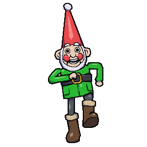

REMOTE ACCESS - Wallace's Files

File
Edit
View
Window

NORBOT WAS HACKED SUCCESSFULLY

Feathers McGraw Has Been Up to His Old Tricks Again
By Gromit

36 Cracks!

Gromit Saves the Day (Again!)
By Wallace
101 Cracks!
The Wrong Trousers Showed Up!
By Gromit
76 Cracks!
Wallace & Gromit's Holiday Adventure!
By Gromit
24 Cracks!
Wallace’s New Invention: The Cheesebot 3000
By Wallace
15 Cracks!

Gromit

Feathers McGraw

Wendolene

Mrs. Mulch

Shaun

Techno Trousers

Moon Rocket

Knit-O-Matic

Dough-Matic

Bun-Vac 6000

NORBOT
Techno Trousers
A marvel of mechatronic overengineering, these mechanical trousers were designed to take Gromit on autonomous walks. Featuring articulated legs, suction-cup feet for wall-walking, and remote-control capabilities, they’re equally suited for scaling buildings or committing daring heists—provided a villainous penguin is at the helm. Though their practical use remains questionable, they stand as a testament to Wallace’s inventiveness (and complete lack of safety foresight).
Moon Rocket
When Wallace discovers they’ve run out of cheese, he proposes the only logical solution—go to the Moon, since everyone knows it's made of cheese. Naturally, this calls for a homemade, coin-operated rocket, cobbled together from household materials, tea kettles, and good ol’ British ingenuity. Despite its humble appearance, the rocket is space-worthy enough to reach the Moon and return safely. It features a charmingly analog control panel, a kettle-boiler engine, and a dining area complete with crackers.
Knit-o-matic
This multitasking monstrosity starts by shearing a sheep, then washes the wool, spins it into yarn, and knits it into cozy jumpers—all in one continuous Rube Goldberg-esque process. It uses conveyor belts, steam-powered washers, a wool cannon, and robotic knitting needles. Though intended to streamline wool production, it tends to cause mayhem, especially when overloaded with a flock of mischievous sheep.
Dough-Matic
A collection of highly ambitious contraptions designed to automate every aspect of baking—from kneading and mixing to decorating and packaging. Includes the “Dough-Matic,” a dough-slinging mechanism with its own personality, and various spring-loaded, gear-operated contrivances for topping, slicing, and surprise-firing flour bags. While impressive, these devices have a tendency to overcomplicate a simple loaf and threaten life and limb in the process.
Bun-Vac 6000

The Bun-Vac 6000 is Wallace’s solution to humane pest control—a vacuum-powered contraption that sucks up rabbits from gardens and gently deposits them into containment capsules. Despite its power, it’s designed with the rabbits’ comfort in mind (sort of). A masterwork in suction dynamics, it’s often seen malfunctioning in the most comical ways imaginable.
NORBOT
Originally built as a helpful robotic assistant for household chores and odd jobs, NORBOT is a gnome-shaped gadget full of charm and circuits. But when Feathers McGraw hacks its system, NORBOT turns evil—spawning an army of disguised robo-gnomes bent on stealing home goods to build a secret escape submarine. Features a personality chip, mechanical arms, and a handy reset button (if you can reach it).
NORBOT

Cheese Notes

Tinker Wiki

Cracker Book